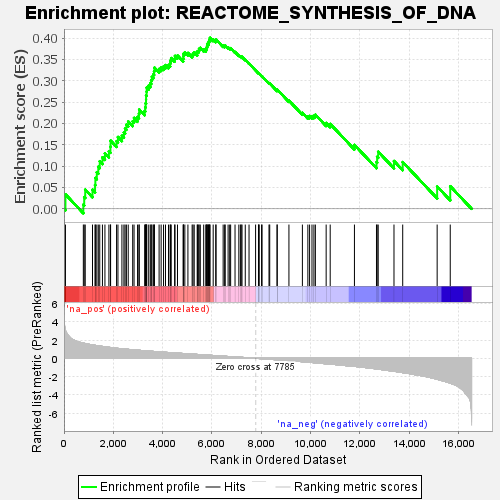

| | | Dataset | all_genes |
| Phenotype | NoPhenotypeAvailable |
| Upregulated in class | na_pos |
| GeneSet | REACTOME_SYNTHESIS_OF_DNA |
| Enrichment Score (ES) | 0.4005959 |
| Normalized Enrichment Score (NES) | 2.0833335 |
| Nominal p-value | 0.0 |
| FDR q-value | 0.008029396 |
| FWER p-Value | 0.047 |
Table: GSEA Results Summary

Fig 1: Enrichment plot: REACTOME_SYNTHESIS_OF_DNA
Profile of the Running ES Score & Positions of GeneSet Members on the Rank Ordered List
| SYMBOL | RANK IN GENE LIST | RANK METRIC SCORE | RUNNING ES | CORE ENRICHMENT | | 1 | PSMA5 | 59 | 3.073 | 0.0337 | Yes |
| 2 | UBE2E1 | 784 | 1.661 | 0.0098 | Yes |
| 3 | ANAPC10 | 820 | 1.640 | 0.0276 | Yes |
| 4 | SEM1 | 861 | 1.626 | 0.0449 | Yes |
| 5 | ORC4 | 1156 | 1.462 | 0.0447 | Yes |
| 6 | PSMD10 | 1260 | 1.421 | 0.0557 | Yes |
| 7 | ANAPC4 | 1272 | 1.417 | 0.0723 | Yes |
| 8 | PSMB6 | 1331 | 1.391 | 0.0856 | Yes |
| 9 | PSMB1 | 1391 | 1.363 | 0.0986 | Yes |
| 10 | CDC26 | 1450 | 1.339 | 0.1113 | Yes |
| 11 | CCNA2 | 1559 | 1.303 | 0.1206 | Yes |
| 12 | CDC16 | 1660 | 1.268 | 0.1299 | Yes |
| 13 | PSMD1 | 1821 | 1.209 | 0.1348 | Yes |
| 14 | PSMD14 | 1883 | 1.188 | 0.1455 | Yes |
| 15 | RFC1 | 1890 | 1.187 | 0.1596 | Yes |
| 16 | PSMC6 | 2132 | 1.106 | 0.1583 | Yes |
| 17 | ORC2 | 2188 | 1.088 | 0.1682 | Yes |
| 18 | CDC27 | 2349 | 1.043 | 0.1711 | Yes |
| 19 | ORC3 | 2430 | 1.024 | 0.1787 | Yes |
| 20 | UBE2D1 | 2478 | 1.011 | 0.1881 | Yes |
| 21 | RFC3 | 2531 | 0.998 | 0.1970 | Yes |
| 22 | PSMA2 | 2605 | 0.982 | 0.2045 | Yes |
| 23 | MCM7 | 2786 | 0.936 | 0.2049 | Yes |
| 24 | PSMB2 | 2841 | 0.926 | 0.2129 | Yes |
| 25 | POLA1 | 2983 | 0.895 | 0.2152 | Yes |
| 26 | CDC23 | 3040 | 0.882 | 0.2225 | Yes |
| 27 | PSMD13 | 3051 | 0.880 | 0.2326 | Yes |
| 28 | PSMD12 | 3273 | 0.827 | 0.2291 | Yes |
| 29 | PSMD7 | 3297 | 0.822 | 0.2377 | Yes |
| 30 | PSMD4 | 3309 | 0.819 | 0.2470 | Yes |
| 31 | GINS1 | 3328 | 0.815 | 0.2558 | Yes |
| 32 | ANAPC7 | 3330 | 0.815 | 0.2656 | Yes |
| 33 | GMNN | 3350 | 0.811 | 0.2743 | Yes |
| 34 | DNA2 | 3355 | 0.810 | 0.2839 | Yes |
| 35 | RPA3 | 3436 | 0.794 | 0.2887 | Yes |
| 36 | RFC4 | 3500 | 0.782 | 0.2944 | Yes |
| 37 | RPA1 | 3537 | 0.776 | 0.3016 | Yes |
| 38 | PSME3 | 3566 | 0.769 | 0.3092 | Yes |
| 39 | MCM6 | 3624 | 0.756 | 0.3149 | Yes |
| 40 | PSMC2 | 3654 | 0.750 | 0.3223 | Yes |
| 41 | RPS27A | 3668 | 0.747 | 0.3306 | Yes |
| 42 | UBA52 | 3857 | 0.706 | 0.3277 | Yes |
| 43 | PSMC3 | 3940 | 0.690 | 0.3311 | Yes |
| 44 | ANAPC15 | 4037 | 0.673 | 0.3334 | Yes |
| 45 | PSMB5 | 4116 | 0.657 | 0.3366 | Yes |
| 46 | PSMA6 | 4239 | 0.635 | 0.3369 | Yes |
| 47 | PSMB3 | 4305 | 0.623 | 0.3405 | Yes |
| 48 | GINS4 | 4317 | 0.620 | 0.3474 | Yes |
| 49 | POLE2 | 4348 | 0.616 | 0.3530 | Yes |
| 50 | LIG1 | 4488 | 0.591 | 0.3517 | Yes |
| 51 | PSMD11 | 4501 | 0.588 | 0.3581 | Yes |
| 52 | PSMC1 | 4603 | 0.570 | 0.3589 | Yes |
| 53 | PSMA4 | 4833 | 0.530 | 0.3514 | Yes |
| 54 | ORC6 | 4843 | 0.528 | 0.3573 | Yes |
| 55 | RBX1 | 4848 | 0.526 | 0.3634 | Yes |
| 56 | PSMA3 | 4901 | 0.519 | 0.3665 | Yes |
| 57 | POLD3 | 5026 | 0.499 | 0.3650 | Yes |
| 58 | ANAPC16 | 5197 | 0.469 | 0.3604 | Yes |
| 59 | PSMA1 | 5233 | 0.462 | 0.3639 | Yes |
| 60 | PRIM2 | 5281 | 0.451 | 0.3665 | Yes |
| 61 | PSME2 | 5404 | 0.426 | 0.3642 | Yes |
| 62 | CCNE2 | 5412 | 0.424 | 0.3690 | Yes |
| 63 | PSME1 | 5463 | 0.416 | 0.3710 | Yes |
| 64 | PSMD8 | 5480 | 0.413 | 0.3750 | Yes |
| 65 | MCM4 | 5528 | 0.404 | 0.3770 | Yes |
| 66 | GINS2 | 5666 | 0.378 | 0.3733 | Yes |
| 67 | POLA2 | 5752 | 0.362 | 0.3725 | Yes |
| 68 | PSMB7 | 5773 | 0.359 | 0.3757 | Yes |
| 69 | CDK2 | 5794 | 0.356 | 0.3788 | Yes |
| 70 | SKP1 | 5807 | 0.354 | 0.3823 | Yes |
| 71 | PSME4 | 5811 | 0.353 | 0.3864 | Yes |
| 72 | RPA2 | 5862 | 0.344 | 0.3876 | Yes |
| 73 | PSMB4 | 5872 | 0.343 | 0.3912 | Yes |
| 74 | RFC2 | 5890 | 0.340 | 0.3943 | Yes |
| 75 | PSMC5 | 5908 | 0.337 | 0.3973 | Yes |
| 76 | CDC45 | 5922 | 0.334 | 0.4006 | Yes |
| 77 | PSMB9 | 6051 | 0.311 | 0.3966 | No |
| 78 | PSMD2 | 6156 | 0.288 | 0.3937 | No |
| 79 | UBC | 6166 | 0.285 | 0.3966 | No |
| 80 | ORC5 | 6455 | 0.235 | 0.3820 | No |
| 81 | CUL1 | 6516 | 0.227 | 0.3811 | No |
| 82 | PSMC4 | 6538 | 0.222 | 0.3825 | No |
| 83 | GINS3 | 6656 | 0.201 | 0.3778 | No |
| 84 | ORC1 | 6720 | 0.191 | 0.3763 | No |
| 85 | POLD2 | 6759 | 0.186 | 0.3762 | No |
| 86 | MCM3 | 6937 | 0.156 | 0.3673 | No |
| 87 | ANAPC5 | 7091 | 0.129 | 0.3596 | No |
| 88 | UBE2C | 7154 | 0.118 | 0.3572 | No |
| 89 | UBB | 7187 | 0.111 | 0.3566 | No |
| 90 | PSMF1 | 7220 | 0.106 | 0.3560 | No |
| 91 | PRIM1 | 7352 | 0.083 | 0.3490 | No |
| 92 | RFC5 | 7505 | 0.057 | 0.3404 | No |
| 93 | MCM8 | 7771 | 0.003 | 0.3243 | No |
| 94 | PSMD9 | 7888 | -0.018 | 0.3175 | No |
| 95 | CCNA1 | 7905 | -0.019 | 0.3167 | No |
| 96 | MCM2 | 7911 | -0.020 | 0.3167 | No |
| 97 | PCNA | 8013 | -0.037 | 0.3110 | No |
| 98 | PSMD6 | 8033 | -0.041 | 0.3103 | No |
| 99 | ANAPC11 | 8315 | -0.097 | 0.2944 | No |
| 100 | FEN1 | 8344 | -0.102 | 0.2939 | No |
| 101 | CDC6 | 8644 | -0.156 | 0.2776 | No |
| 102 | CCNE1 | 8645 | -0.157 | 0.2795 | No |
| 103 | PSMB8 | 9123 | -0.252 | 0.2535 | No |
| 104 | PSMA7 | 9669 | -0.367 | 0.2247 | No |
| 105 | ANAPC1 | 9891 | -0.417 | 0.2163 | No |
| 106 | POLE | 9961 | -0.432 | 0.2174 | No |
| 107 | SKP2 | 10058 | -0.451 | 0.2170 | No |
| 108 | POLE3 | 10137 | -0.474 | 0.2180 | No |
| 109 | PSMD5 | 10196 | -0.487 | 0.2204 | No |
| 110 | MCM5 | 10633 | -0.592 | 0.2010 | No |
| 111 | POLE4 | 10797 | -0.629 | 0.1987 | No |
| 112 | FZR1 | 11780 | -0.879 | 0.1496 | No |
| 113 | PSMD3 | 12674 | -1.159 | 0.1093 | No |
| 114 | POLD1 | 12701 | -1.168 | 0.1219 | No |
| 115 | UBE2S | 12744 | -1.182 | 0.1337 | No |
| 116 | CDT1 | 13384 | -1.414 | 0.1119 | No |
| 117 | ANAPC2 | 13738 | -1.563 | 0.1094 | No |
| 118 | POLD4 | 15135 | -2.291 | 0.0522 | No |
| 119 | PSMB10 | 15666 | -2.710 | 0.0528 | No |
Table: GSEA details [plain text format]
Fig 2: REACTOME_SYNTHESIS_OF_DNA: Random ES distribution
Gene set null distribution of ES for REACTOME_SYNTHESIS_OF_DNA